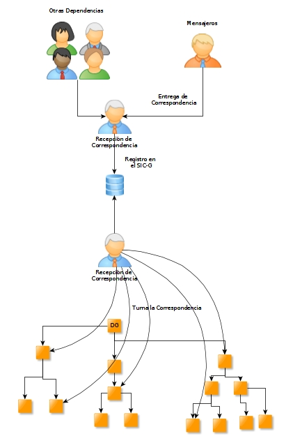

Concepto
Se entiende por Control de Gestión al conjunto de procesos que la empresa u organización aplica para asegurarse de que las tareas o procesos que en la misma se realizan, están encaminadas a la consecución de sus objetivos. Se entiende que estos objetivos están previamente establecidos: para las empresas privadas están establecidos por parte de los accionistas, que están representados por su consejo de administración (beneficios, expansión y seguridad); y en el caso de las Organizaciones Gubernamentales están establecidos por la legislación vigente que los rige como el Reglamento Interno entre otras, la Ley de Transparencia, etc.
Desde esta perspectiva la labor de Control de Gestión no se limita a comprobar que las tareas realizadas o las decisiones tomadas han sido correctas, sino que parte de su cometido es influir y orientar el comportamiento de la organización para que se alcancen los objetivos propuestos.
Para qué Sirve el Control de Gestión
En las Instituciones Gubernamentales suelen darse altos niveles de delegación en la toma de decisiones; pero la Dirección General debe mantener un control estricto en determinadas operaciones. Es válido para tareas de tipo rutinario, especialmente las contenidas en los manuales de procedimientos. El Control de Gestión va a permitir la delegación, pero no la descentralización de las decisiones. El riesgo que puede surgir con este tipo de control, es que puede prevalecer la eficiencia de la tarea en detrimento del resultado obtenido.
Como Implementar el SIC-G en mi Organización
El proceso de Control de Gestión en su Organización y su Implementación
La implementación de un Sistema de Control de Gestión en la empresa debe hacerse para cada una de las Áreas que conforman la Organización, directamente proporcional en función de su Estructura Organizacional y en correspondencia a la Estructura Funcional (No Escrita).
Para ello, se recomienda el Uso, Configuración e Implementación del Sistema Integral de Control de Gestión (SIC-G).
El SIC-G, está estructurado de la siguiente manera:
SIC-G es un Sistema Modular
El Desarrollo de Sistemas Modular es un enfoque donde se subdivide un sistema (el Todo) en partes más pequeñas llamadas Módulos, los cuáles pueden ser creadas independientemente (y con diferentes Tecnologías) y luego utilizarlas en diferentes sistemas. Esta filosofía es adoptada especialmente en Arquitectura, Ingeniería del Software, diseño industrial, etc.
Podemos agrupar los Módulos de la siguiente manera:
Módulos Básicos:
Estructura:
El Módulo de Estructura es un Módulo Básico que su función principal es generar un Catálogo Global de todos y cada uno de los Usuarios Existentes en Relación a su Función dentro de la Organización.
Seguridad:
El Módulo de Seguridad tiene la función de Controlar el Acceso a todos y cada uno de los Usuarios, así como Denegar el Acceso a aquellos que no tiene permisos de ingresar al Sistema.
Reportes:
El Módulo de Reportes es un Módulo Básico del SIC-G, que consiste en brindar a Todos y cada uno de los demás Módulos, Todos los Reportes Necesarios Básicos y Personalizados que requiera cualquier Módulo adicional.
Módulos Intermedios del SIC-G
Recursos Humanos
Es un Módulo que se forma al Combinar el Módulo de Estructura con el Módulo de Seguridad, y su función resultado es de Brindar un conocimiento de Toda la Estructura Organizacional de la Institución.
Módulo de Control de Gestión
Es el Módulo al que queremos llegar en este documento. Es el Módulo que se encargará de Registrar, Gestionar y Controlar todos y cada uno de los documentos (oficios) que ingresan de manera oficial (o no Oficial) a la Institución en la que pretendemos implementar el SIC-G.
SIC-G es un Sistema Parametrizable
Una parte muy Importante del Sistema opera a través de Catálogos, por lo que todas las actualizaciones o modificaciones en la información de realiza en cuestión de minutos. Esto implica que una vez liberado el SIC-G dentro de su Organización no requiere (Casi Nulo) mantenimiento al Código y las Actualizaciones las puede ejecutar una sola persona como Administrador del Sistema.
SIC-G es un Sistema que cumple con el Estándar MVC
Está desarrollado de acuerdo a los más importantes y principales estándares del Desarrollo del Software, uno de ellos es el MVC o también conocido como Modelo Vista Controlador, que a grandes rasgos el estándar obliga a que todo sistema en la modalidad MVC cada una de sus partes sea independiente entre sí, y que no sea obligatorio utilizar una tecnología específica.
Para que sea más comprensible, la Vista o también conocida como Front-End, el SIC-G sugiere dos tecnologías o alternativas:
Estas Tecnologías cuentan con un sustento detrás el por qué se sugieren:
Por el otro lado en donde se almacenará toda la información que viene siendo el Controlador o también conocida como Back-End, se tienen dos alternativas, al ser la Mayoría de PC’s en plataforma Windows se puede utilizar:
La ventaja de todo esto es que el SIC-G, no se limita a utilizar Tecnología Microsoft o Tecnología Linux, sino que podemos combinar ambas o incluso utilizar ambas, u otras tecnologías.
Requisitos para su Instalación
Como todo sistema informático requiere de ciertos prerrequisitos para su instalación o configuración. Entre estos, podemos clasificar en grupos los requisitos para que sea viable la Implementación del SIC-G en su Organización conocida como Infraestructura Informática.
Infraestructura en Hardware
Es necesario que cada uno de los usuarios cuenten con un equipo de Cómputo (personal)
Que la Institución cuente con Red de Datos, accesible a todos los usuarios.
Infraestructura en Software
Todos los Equipos cuenten con Sistema Operativo Instalado.
Que exista un Grupo de Trabajo o Dominio en su Organización.
Como funcionara el SIC-G en su Organizacion
Una de las principales tareas del SIC-G es el Turnar los Asuntos que recibe Recepcion.
Modelo de Turnar Volantes
Reportes
Uno de los principales y basicos modulos que cuenta el SIC-G, es el Modulo de Reportes.
Este Modulo se encarga de Disminuir la Carga del Servidor para mostrarle los Informes a los Usuarios.